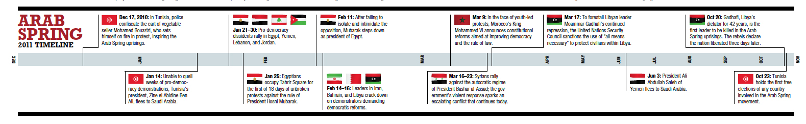

WHAT’S FOURTH WAVE DEMOCRATIZATION?
According to Hussain, “democratization movements had existed long before technologies such as mobile phones and the internet came to these countries. But with these technologies, people sharing an interest in democracy built extensive networks, created social capital, and organized political action; virtual networks materialized in the streets” (Hussain, 2013).
In the past, democratization has been achieved in the “traditional” way, usually by war as a vehicle for mass mobilization (think WWII or the fall of the Soviet Union). However, as our world becomes more technological, democratization has, too. Fourth wave democracy is a result of information and communications technology (ICTs). For all intents and purposes, we’ll think of ICTs as the internet and mobile technology. ICTs enable rapid mass mobilization, where online activism translates to real-world change. We are in the midst of the fourth wave; the internet is helping to democratize countries.
CUBA
The internet in Cuba has always been something widely discussed by the likes of Amnesty International, the US Government, and Human Rights Watch, to name a few. With one service provider (ETECSA Telecom) run by the Cuban government, access is completely state-controlled and something that until recently, no citizen could use. It’s no coincidence that in recent history, there hasn’t been any sort of wide-scale protest against the communist government under Raul Castro. In line with Hussain’s argument that digital platforms are necessary to democratize, Cuba’s lack of citizen and democratization is largely to blame on lack of internet access.
First, some facts about the current state of internet in Cuba:
- There’s only one telecom company (ETECSA), and it’s controlled by the government
- Less than 25% of Cubans have internet access
- Only 5% of households are connected
- The average internet speed is 4% of the US’s average
- Content is censored to exclude anything critical of the state, and all internet usage is heavily monitored
- Recently, 40 Wi-Fi hotspots have been installed around the country by the government, though it’s too expensive for many Cubans
American companies have made efforts to intervene and bring unrestricted access into Cuba. Google, in particular, has made some strides including a technology center in Havana. Morozov argued that our cyber-utopian ideals are marred by the assumption that the “…Internet favors the oppressed rather than the oppressor” (Morozov, 2011). The fact is, despite the regime’s apparent investment into net access for its citizens (see Wi-Fi hotspots), real progress will not be achieved until they lessen control or fall out of power (Elgan, 2016). With a government-controlled monopoly, price inflation, and rampant censorship, there’s not much outside companies eager to make a buck or do some feel-good humanitarian work can do.

There are some Cuban bloggers, like Yaoni Sanchez, who have started to speak out about life under the regime. However, because the digital platform is so tricky for those living that reality to gain access to, the majority of those hearing about it are outside of Cuba. In this sense, it’s almost like reverse digital activism, and relates back to Morozov’s critique of our cyber-utopian ideals. Those who are oppressed in this situation don’t even know any better thanks to a full-time slew of propaganda and limited media from outsiders (Morozov, 2011).
So is Cuba an example of fourth wave democracy? Maybe. Presently, it seems as if the power of the internet is not enough to overtake the regime. However, the groundwork is laid and it’s undeniable that ICTs have started something, time will tell if these efforts are successful.
MYANMAR
When Myanmar (then Burma) gained independence in 1948 from Britain, they enjoyed a brief period of democracy. However, the government was largely unsteady and a coup d’etat followed, replacing democracy with a socialist state under tight military control. Under the socialist regime, media was tightly controlled through legal measures:
- The Printers and Publishers Registration: enacted in 1962
- Television and Video Law: enacted in 1985
Together, these laws gave the government control over all newspapers, restricted the import of international media, and prolifically censored content.
Over time, this lack of freedom and extreme censorship led to much opposition from the people of Burma. Most recently, in 2007, there were wide-scale protests against government repression and cruelty, called the ‘Saffron Revolution’ (named after the color of the monks’ robes who participated in the protests). This ended with hundreds of deaths (the actual number is withheld by the government), countless injuries, and even stricter censorship and surveillance on all forms of digital media. This restriction was in response to the access of news online depicting the government’s action in the Revolution in a negative light. Thanks to the proliferation of digital media, mostly on a global scale outside of Myanmar, the world was attuned to the violence of the regime during the Revolution.
Insights into The Saffron Revolution:
In 2010, the protests spurred a constitutional amendment enacting a democratic government. In 2011, the heavy restrictions on internet ceased. ‘Free’ media returned in 2012. However, similar to Cuba, only an elite 1% of citizens have stable access to the internet due to the high cost of SIM cards and unreliable connections. Even that 1% has very unstable access, so interconnectivity is very difficult. The affordance of information diffusion is severely hindered.
No matter the amount of censorship, the return of media and internet has spurned dissent within Myanmar. Even during heavy censorship, in 2007 the Saffron Revolution was a shining example of how government control efforts failed when those outside Myanmar and the elite within could get their non-governmentally controlled news through digital media. Due to the internet, there’s no way the government of Myanmar can have the absolute control they used to have over media. Though they’re trying. Despite the so-called freedom citizens now enjoy, there are several reports of journalists being arrested and other human rights violations by the government.
There are several organizations, like the Myanmar ICT for Development Organization, pushing for social change within Myanmar. They use a mixture of digital content and print to spread their message to as many people as they can. Myanmar is at an interesting turning point and only time will tell if the power of the internet overcomes that of the government to achieve true democracy and freedom, thus truly having successful democratization thanks to digital media.
THE ARAB SPRING
The Arab Spring is widely-thought of as a successful digital campaign for fourth-wave democracy that brought about real change. Hussain cites the Arab Spring in support for his arguments on the power of digital activism.
The Arab Spring started in Tunisia when a young man set himself on fire in protest of a broken justice system. From this, protests erupted all over the country, thanks largely to blogs and text messages, which revealed to Tunisians that they all shared grievances; they had a common dissatisfaction with their government. Through video services like YouTube, texts, and social media, “people crafted strategies for action and a collective goal: to depose their despot” (Hussain, 2013). Citizens started to share videos and images showing how their leaders exploited their country, like one of the Tunisian president’s wife taking a private plane to go shopping by herself. When the government cracked down on social media, people relied on text messaging on its own. The protests grew and outside organizations like Anonymous stepped in. Former President Ben Ali soon fled Tunisia.
This movement soon spread around the Arab World. In Egypt especially, with a very high rate of internet use and fluency, there were some of the largest protests ever seen against the country’s governmental corruption. Around the Arab World, citizens began sharing strategies between countries to help collective action be as successful as possible, learning from each other.
Eventually, Egypt’s Mubarak was removed, Libya’s Gaddafi was assassinated by rebel fighters, Yemen’s Saleh fled the country, and Syria’s Assad was absorbed in civil war. All these countries made moves toward democracy with different measures including democratically-elected officials, wealth redistribution efforts, and legislative ability to pass laws.
In the Arab Spring’s case, ICTs allowed people from very different countries with very different histories to share grievances and work together, globally and locally, to overthrow corrupt regimes. Because of new technologies, these very different countries became part of very similar narratives.
WORKS CITED
Elgan, M. (2016, April 18). Why even Google can't connect Cuba | Computerworld. Retrieved October 23, 2016, from http://www.computerworld.com/article/3056627/internet-of-things/why-even-google-cant-connect-cuba.html
Farguell, S. M. (2014, Spring). Digital media and democratization: The case of Myanmar [Scholarly project]. Retrieved December 3, 2016, from https://dspace.mah.se/bitstream/handle/2043/18108/Thesis_SMF_Digital_Media_Democratization_Myanmar_2014.pdf?sequence=2&isAllowed=y
Howard, P. N., & Hussain, M. M. (2013). Democracy's fourth wave?: Digital media and the Arab Spring. Oxford University Press.
Morozov, E. (2011). The net delusion: The dark side of internet freedom. New York, NY: PublicAffairs.